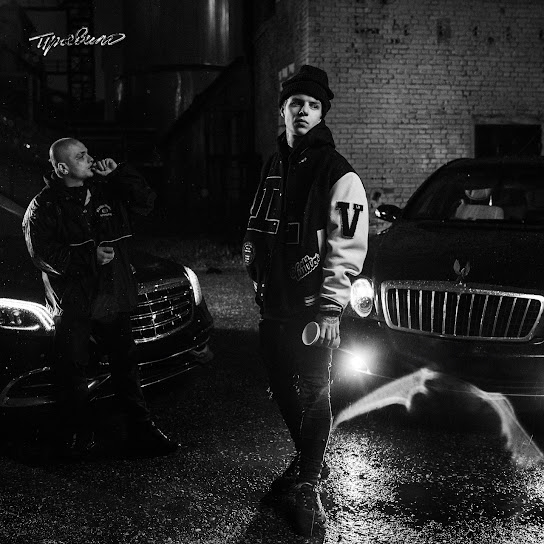
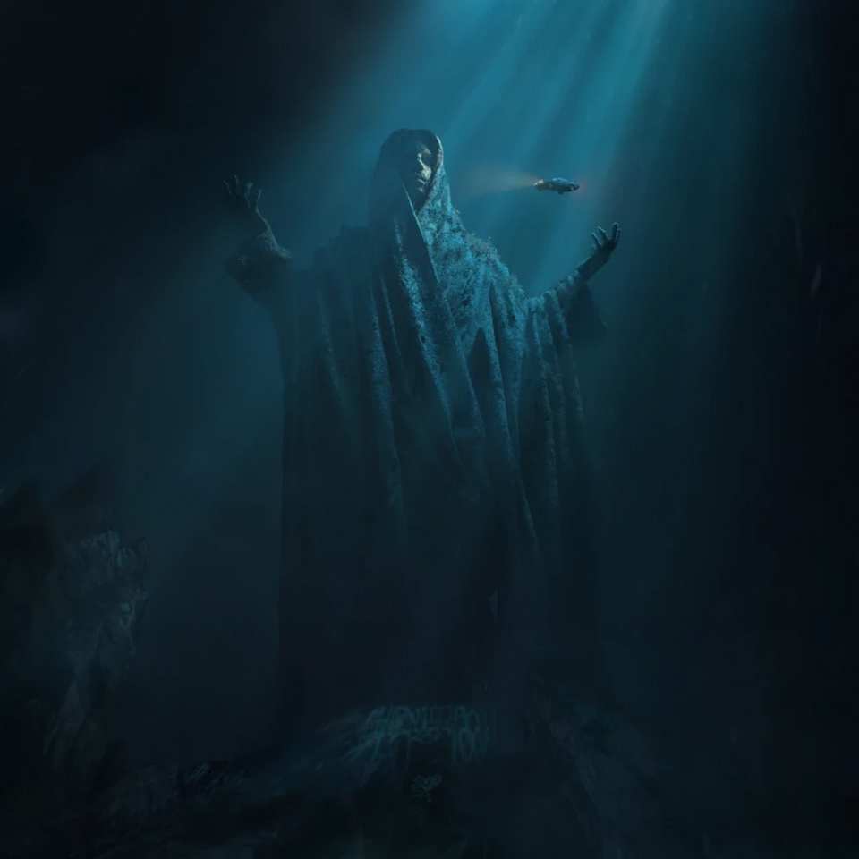
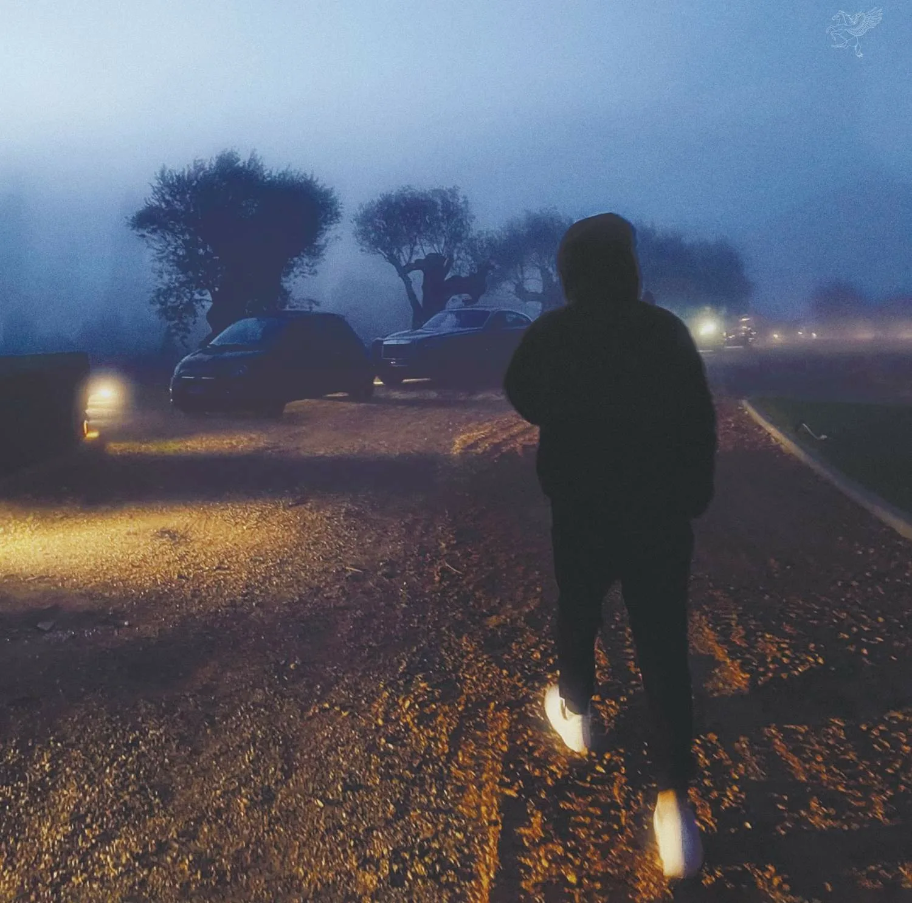

MNOGOZNAAL
Максим Лазин, известный как Mnogoznaal — российский рэп-исполнитель и битмейкер. Родился 15 июля 1993 года в Печоре (Республика Коми). В начале карьеры был битмейкером под псевдонимом Fortnoxpockets, позже взял никнейм Mnogoznaal и начал записываться под собственный продакшн.
Переехав в Санкт-Петербург, познакомился с PHARAOH и вступил в творческое объединение Dead Dynasty. В 2014 году выпустил мини-альбомы «Марш слонов» и «Иферус: Приквел». Артиста заметили и включили в список «11 артистов, которые изменят русский рэп» вместе со Скриптонитом, ATL и Олегом ЛСП.
В концептуальных релизах «Гостиница Космос» (2018) и «Круг Ветров» (2020) Mnogoznaal продолжил развивать свой стиль, смешивая биты с народными мотивами и психоделическим звучанием. Альбом «Гостиница Космос» считается самым аутентичным в его дискографии и посвящён родному городу Печора.
Среди коллабораций — совместные треки с PHARAOH («Семейные узы», «Акид») и другими артистами Dead Dynasty. После трёхлетнего перерыва в концертах вернулся на сцену в 2025 году.
Альбомы на виниле
| Обложка | Название альбома | Трек-лист | |||||||||||||
|---|---|---|---|---|---|---|---|---|---|---|---|---|---|---|---|
 |
2020 - Правило |
|
|||||||||||||
 |
2021 - Million Dollar Depression |
|
|||||||||||||
 |
2022 - PHILARMONIA |
|